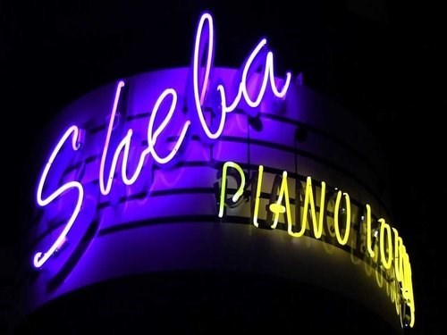

History of Jazz
Jazz is a music genre that originated in the African-American communities of New Orleans, United States, in the late 19th and early 20th centuries, and developed from roots in blues and ragtime. Jazz is seen by many as 'America's classical music'. Since the 1920s Jazz Age, jazz has become recognized as a major form of musical expression. It then emerged in the form of independent traditional and popular musical styles, all linked by the common bonds of African-American and European-American musical parentage with a performance orientation.


Modern Jazz
Today's Jazz
Today’s jazz artists are basically going in one of three directions: traditional, contemporary mainstream, or "anything goes."
- Traditionalists are performing jazz mainly patterned on Blues, Swing, Bebop, and Hard Bop; in other words, they exclude Free Jazz and Fusion
-
Traditionalists believe that what they play is "real jazz," not the various hybrids and "add-ons" (according to them) that occurred in the 1960s and since. They are also known as "jazz purists."
- Trumpeter Wynton Marsalis is at the forefront of this movement. He is an internationally acclaimed musician and has played a major role in the resurgence of jazz.
Contemporary mainstream jazz artists are influenced mostly by Hard Bop sensibilities.
- Contemporary mainstream jazz artists use, for the most part, Hard Bop instrumentation and musical forms.
- owever, within the Hard Bop framework, contemporary mainstream jazz artists continue to push the music forward, e.g., ever increasing technical proficiency on their instruments, expanded musical harmonies (more difficult and complex chords and chord progressions), and deeper and varied emotions expressed.
- Trumpeter Terence Blanchard is one of today’s most important contemporary mainstream jazz artists.
“Anything goes” jazz artists will put all kinds of music into the pot and stir it up; these can include but are not limited to: all styles of jazz
- all styles of jazz
- classical music (mostly of the 20th and 21st century variety)
- world music (i.e., music from other parts of the world), especially from South America and Asia
- world music (i.e., music from other parts of the world), especially from South America and Asia
- all styles of blues, rock, rhythm and blues, Latin, funk, hip-hop, ska, rap, and popular music
Local Venues
Now that you know the history of Jazz, you should know that San Francisco is home to some amazing jazz venues, including SFJAZZ Center: the first performing arts center in the country dedicated solely to the genre. Here is a guide to the best places to listen to live jazz in San Francisco:
Sheba Piano Lounge

Open for dinner and drinks, Sheba Piano Lounge is an intimate jazz lounge and Ethiopian restaurant. There is live music every night starting at 8:00 p.m. on Sunday through Thursday and 9:00 p.m. on Fridays and Saturdays. The different performances could be anything from Afro-Cuban jazz to violinists.
Sheba Piano Lounge, 1419 Fillmore St, San Francisco, CA, USA 1-415-440-7414
SFJAZZ Center
Starting in 1983, SFJAZZ became a cultural center for jazz music, with over 300 performances each year at the new, 36,000-square-foot SFJAZZ Center built in 2013. Costing $64 million to construct, the new SFJAZZ Center was the first venue dedicated solely to jazz music in the country. Although the venue can accommodate up to 700 people, the performing arts center still provides an intimate atmosphere. Every year, the SFJAZZ Center holds the Jazz Festival, SFJAZZ Summer Sessions, as well as free concerts in the summer at the Stanford Shopping Center and Levi’s Plaza.
SFJAZZ Center, 201 Franklin St, San Francisco, CA, USA 1-866-920-5299
Local Edition
Local edition is a newspaper-themed bar that sits right under the Hearst building on Market and Montgomery. There is live music Monday through Wednesday night starting at 8:00 p.m.
Local Edition, 691 Market St. San Francisco, CA, USA 1-415-795-1375